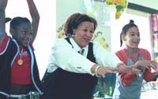

|
W a s h i n g t o n S t a t e C o u r a g e
t o T e a c h
www.wactt.org
Professional development for teachers traditionally focuses on content and technique. The Washington State Courage to Teach program, an affiliate of the Center for Teacher Formation, chooses to go to the heart of the matter, taking a unique approach to revitalizing the teacher’s inner life. They have developed a retreat based experience that has proved highly successful in renewing the passion and original motivation that lives in the hearts of all good teachers and school leaders. Our children are the fortunate recipients of the fruits of their labor: quality relationships and quality teaching. Please read on, and visit their website. Better yet, we hope you will be moved to find a way to support this important work.
Teaching From The Heart
“The question we most commonly ask is the “what” question—what subjects shall we teach? When the conversation goes a bit deeper, we ask the “how” question—what methods and techniques are required to teach well? Occasionally, when it goes deeper still, we ask the “why” question—for what purpose and to what ends do we teach? But seldom, if ever, do we ask the “who” question—who is the self that teaches? How does the quality of my selfhood form—or deform—the way I relate to my students, my subject, my colleagues, my world? How can educational institutions sustain and deepen the selfhood from which good teaching comes?”
“Most teachers enter the profession for reasons of the heart— they teach because they care about students. But the demands of teaching and the conditions of some schools cause too many teachers to lose heart as the years go by. Is it possible to help teachers take heart once more so they can continue to do what good teachers always do—which is to give heart to students?”
--Parker Palmer, author of Courage to Teach
An Occupation Under Stress
These are critical and trying times for public schools. With a current and worsening shortage of good teachers and principals, inadequate funding, rising expectations, increasing demands, and waffling political commitment, never before has it been a more crucial time to bolster teachers’ morale and to rekindle their passion for the profession.
Now More Than Ever
Current events continually remind us that in times of political and economic stress and insecurity, our children need teachers who can be fully present to their questions and needs for guidance, reassurance, perspective, and encouragement. Being able to do this for young people requires teachers to have a sense of wholeness, balance, compassion, empathy, energy, openness, and clarity. Maintaining the passion to teach and lead wholeheartedly takes not only skill, it takes inner strength and spirit. Now more than ever, it takes courage to teach.
A Creative & Thoughtful Solution
Under the guidance of Dr. Parker J. Palmer, Ph.D., author of The Courage to Teach, the Fetzer Institute created the Courage to Teach (CTT) program in 1997, piloting an approach to professional development called “teacher formation.” The program, now operating with local support in 22 regions of the US, brings public K-12 teachers, administrators, and other educational leaders together for quarterly retreats over one to two years to help rejuvenate their personal commitment to teaching. It works in affiliation with the Center for Teacher Formation under the leadership of Rick and Marcy Jackson.
The Courage to Teach program builds on a simple premise: We teach who we are. When we take time for reflection, quiet, and deep listening to ourselves, others, and nature, we can reconnect to who we are as people and educators, finding wholeness, vocational clarity, and renewal.
Through a process called “formation,” educators are invited to reconnect to their identity and profession—their “soul and role.” In large and small group settings as well as individually, participants use stories from their own lives, reflections on classroom practice, and insights from poets and other writers to explore the inner landscape of the educator’s life. Participants are invited to create a supportive and compassionate environment that encourages deep listening and honest speaking about their personal and professional lives.
Since Fall, 1997 we have offered 12 seasonal retreat series and 5 Introductory weekend Retreats, serving over 450 teachers and educational leaders including principals, superintendents, and teacher-educators.
Profound Effects
The Courage to Teach program deeply impacts those who experience it. Enormous potential for positive change is rediscovered—leading to greater depth and vitality in student-teacher relationships, renewed collegial practices in schools, and the revitalization of teachers as leaders in public education.
While the retreats are “all about the teacher,” the ripples that emanate from hundreds of people teaching from the heart, going back to their classrooms and truly connecting with thousands of students are causing a profound wave of change.
The Mission of Washington State Courage To Teach
Washington State Courage to Teach helps school teachers and leaders reclaim their personal identity and professional integrity so that they more fully nurture the minds, hearts, and spirits of our children. The program invites educators to reclaim their wholeness and vocational clarity and make connections between the renewal of the spirit and the revitalization of public education.
New groups start each fall. Applications are distributed in the spring and due in June.
Washington State Courage to Teach is a program of Powerful Schools and works in affiliation with the Center for Teacher Formation. Local facilitators are Rick and Marcy Jackson, Yarrow Durbin, John Morefield, Jeanne Strong, Anita Morales, Terry Chadsey, and Gloria Gostnell.
Contact Information
Yarrow Durbin, Director
Washington Courage to Teach
4509 Interlake Ave N #200
Seattle, WA 98103
206-633-2888; FAX; 206-633-2890
info@wactt.org
www.wactt.org |
|